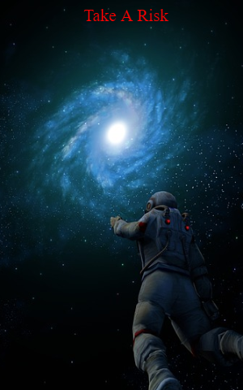

Weapons
You decide its worth a shot at trying to use the weapons and use them to destroy the asteroids. You open the weapons panel and see a few buttons that must be pressed in a certain order to activate weapons. You randomly press a sequence, *BUZZ* wrong. You try another slightly different one, *BUZZ* wrong. One more try before this ship can risk malfunctioning you thought.By the smallest but of luck, *DING*. You see the weapons come up in front and begin to shoot at the asteroids... it seems like theres nothing here. In disappointment, you decide to head back to the top, but you left with a strange feeling that taking a risk is always the best choice
